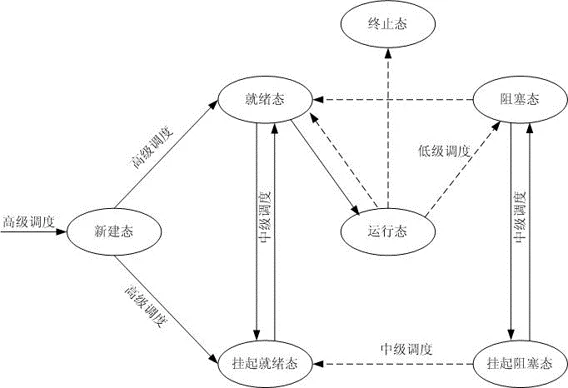

C# 线程

- huuhghhgyg
- 2 min read

Thread 线程
一个可执行路径，独立于其它线程执行。
线程被抢占
线程的执行与另外一个线程上代码的执行交织的那一点。
线程的属性&特性
- 线程一旦开始执行，
IsAlive为true；线程结束变成false - 线程结束的条件：线程构造函数传入的委托执行结束
- 线程一旦结束，无法重启
- 每个线程都有
Name属性，通常用于调试。Name只能设置一次，更改会抛出异常。 - 静态的
Thread.CurrentThread属性返回当前执行的线程。
Join
调用Join方法，可以等待另一个线程结束。
1Thread t = new Thread(Go);
2t.Start(); //开始线程
3t.Join(); //等待线程执行完成
4Console.WriteLine("Thread t has ended!"); //线程结束
5
6static void Go() //线程构造函数传入的委托
7{
8 for (int i = 0; i < 1000; i++)
9 Console.Write('y');
10}
添加超时
调用Join的时候，可以设置一个超时，可以使用毫秒或者TimeSpan
如果返回true，线程结束；如果超时，返回false
1bool IsTerminated = thread1.Join(2000); //等待2秒后线程是否执行结束
Sleep
Thread.Sleep()方法会暂停当前的线程，并等待一段时间。可以是毫秒或者TimeSpan
1Thread.Sleep(500); //线程休眠500ms
Thread.Sleep(0)会导致线程立即放弃当前的时间片，自动将CPU移交给其它线程。Thread.Yield()做同样的事情，但是它只会把执行交给同一处理器上的其它线程。- 当等待Sleep或Join的时候，线程处于阻塞的状态。
阻塞：正在等待某一事件发生，根据原因可设置多个阻塞队列
❔ 如果在代码中任何地方插入Thread.Yield()就破坏了程序，程序几乎肯定会有bug
阻塞
线程的执行由于某种原因导致暂停。
可以通过ThreadState属性判断线程是否处于被阻塞的状态。
ThreadState
ThreadState是一个flags enum(可以有多个枚举值)，通过**按位**的形式可以合并数据的选项。
枚举值是2^n
举例
| 状态（只列举部分状态） | 枚举值 | 二进制枚举值 |
|---|---|---|
ThreadState.Unstarted |
8 | 1000 (2^3) |
ThreadState.Stopped |
16 | 10000 (2^4) |
ThreadState.WaitSleepJoin |
32 | 100000 (2^5) |
1var state = ThreadState.Unstarted | ThreadState.Stopped | ThreadState.WaitSleepJoin;
2// 得到的状态为xxx000
通过ThreadState判断线程是否处于被阻塞的状态
1bool blocked = (someThread.ThreadState & ThreadState.WaitSleepJoin) != 0;

常用的线程状态
- Unstarted：未开始
- Running：运行
- WaitSleepJoin：阻塞
- Stopped：停止
剥离出这四种状态
1public static ThreadState SimpleThreadState(ThreadState ts)
2{
3 return ts & (ThreadState.Unstarted |
4 ThreadState.WaitSleepJoin |
5 ThreadState.Stopped);
6}
解除阻塞
四种情况
- 阻塞条件被满足
- 操作超时（如果设置了超时）
Thread.Interrupt()进行打断Thread.Abort()进行中止
异常处理
创建线程时在作用范围内的try/catch/finally块，在线程开始执行后就与线程无关了。
在WPF、WinForm里，可以订阅全局异常处理事件：
Application.DispatcherUnhaandledExceptionApplication.ThreadException
主线程（UI线程）上有未处理的异常，会触发以上两个线程；非UI线程不会触发以上两个线程。
任何线程有任何未处理的异常都会触发：
- AppDomain.CurrentDomain.UnhandledException
前台和后台线程
默认情况下，手动创建的线程是前台线程。
- 只要由前台线程在运行，应用程序就会一直处于活动状态，后台线程却不行。
- 一旦所有的前台线程停止，那么应用程序就停止，任何的后台线程也会突然终止。
可以通过
IsBackground判断线程是否后台线程。
线程优先级
线程的优先级（Thread的Priority属性）决定了相对于操作系统中其它活跃线程所占的执行时间。
优先级：enum ThreadPriority {Lowest, BelowNormal, Normal, AboveNormal, Highest}
信号
有时候需要让线程一直处于等待的状态，直至接收到其它线程发来的通知。这就叫做signaling（发送信号）
最简单的信号结构为ManualResetEvent，调用其上面的WaitOne()方法会阻塞当前的线程，直到另一个线程通过调用Set()方法来开启信号。
1var signal = new ManualResetEvent(false);
2new Thread(()=>
3{
4 Console.WriteLine("Waiting for signal...");
5 signal.WaitOne();
6 signal.Dispose();
7 Console.WriteLine("Got signal!");
8}).Start();
9
10Thread.Sleep(3000);
11signal.Set(); //打开信号（线程）
调用完Set()之后，信号会处于“打开”状态，可以通过调用Reset()方法将其关闭。
富客户端应用程序的线程
在有UI的程序中，如果在主线程执行耗时的操作，就会导致整个程序无响应。针对这种耗时的操作，一种流行的做法是启用一个worker线程，执行完操作后再将结果更新到UI。 富客户端应用的线程模型：
-
UI元素和控件只能从创建它们的线程来进行访问（通常是主UI线程）
-
当想从worker线程更新UI的时候，必须把请求交给UI线程 如：在WPF中，在元素的Dispatcher对象上调用
BeginInvoke或Invoke；在WinForm中，调用控件的BeginInvoke或Invoke；UWP中，调用Dispatcher对象上的RunAsync或Invoke。这些方法都接收一个委托。 -
BeginInvoke或RunAsync通过将委托排队到UI线程的消息队列来执行工作。 -
Invoke也会执行相同的操作，但随后会进行阻塞，直到UI线程读取并处理消息。所以Invoke允许从方法中获取返回值。
从其它线程直接更改UI会引发System.InvalidOperationException错误（无法更新主线程上的UI）
应该调用Dispatcher.BeginInvoke()，把委托排队发送到UI线程的消息队列（处理键盘鼠标事件、定时事件等）
1Action action = () => MessageText.Text = message; // 委托
2Dispatcher.BeginInvoke(action); // 将委托发送到消息队列
线程池
线程池可以通过预先创建一个可循环使用线程的池来减小类似“创建一个新的局部变量栈(stack)”这样的开销。 线程池允许在不被线程启动的开销淹没的情况下运行短期操作。（操作事件没有线程启动的时间长） 线程池对于高效的并行编程和细粒度的并发是必不可少的。
使用线程池需要注意的几点：
- 不可以设置池线程的
Name - 池线程都是后台线程
- 阻塞池线程可使性能降级
- 可以自由地更改池线程的优先级，当它释放回池的时候优先级将还原为正常状态。
- 可以通过
Thread.CurrentThread.IsThreadPoolThread属性判断是否执行在池线程上。
进入线程池
最简单的、显式地在线程池运行代码地方式就是Task.Run
参考资料
位操作
| 运算符 | 含义 |
|---|---|
| & | 按位与 |
| \ | 按位或 |
| ^ | 按位异或 |
| « | 左移 |
| » | 右移 |
按位与(&)和按位或(|)
按位与(&)和按位或(|)运算规则同与(&&)和或(|)，不同在于按位运算是按照二进制位运算。
例如：一个二进制数1101 1001，只要它的后四位
只需要进行如下操作：1101 1001 & 0000 1111即可。
| 数值 | 1101 1001 |
| & 与运算 | 0000 1111 |
| 结果 | 0000 1001 |
| 按位或运算同理 |
按位异或(^)
只要参与运算的双方不同，结果为1，否则为0
| 运算 | 结果 |
|---|---|
| 0^0 | 0 |
| 0^1 | 1 |
| 1^0 | 1 |
| 1^1 | 0 |
左移
将目标二进制数字向左/右移动相应的位数
换算为十进制为原来的1/2
左移补0;
1011 1111 << 1 == 0111 1110
右移
需要看符号位：负数补1，正数补0
换算为十进制为原来的1/2
1011 1111 >> 1 == 0101 1111
位移运算：左乘右除
上下文切换
当线程阻塞或解除阻塞时，操作系统将执行上下文切换。
- I/O-bound 花费大部分时间等待某件事发生的操作。
- Compute-bound或CPU-bound 花费大部分事件执行CPU密集型工作的操作